História
Eras do BTS
Cada era marca uma fase criativa e visual distinta do grupo — da estreia crua em 2013 até o comeback que parou o mundo em 2026
(Futuramente adição das era solo).

A estreia explosiva. O BTS chegou com uma sonoridade crua de hip-hop escolar, letras sobre rejeição e sonhos, e uma energia bruta que diferenciava o grupo de tudo que existia no K-pop na época.
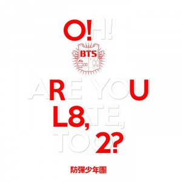
Segunda entrega ainda em 2013, com a pergunta: "Oh, are you late too?" — crítica ao sistema educacional sul-coreano e ao excesso de pressão sobre os jovens.
O amor entra na narrativa da escola. Mais suave e romântico, o projeto trouxe Boy In Luv e Suga's letras introspectivas — marcando uma transição de tom.
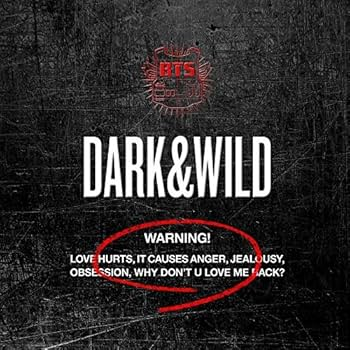
Primeiro álbum de estúdio completo. Amor que vira raiva, obsessão e sombra — uma faceta mais madura e intensa, com arranjos mais pesados e letras complexas.

O início da era mais icônica do grupo. "화양연화" significa "o momento mais bonito da vida" — juventude, liberdade e a dor de crescer. I Need U marcou o BTS para sempre.
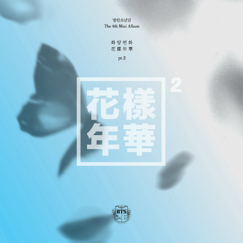
A continuação expandiu o universo narrativo do BTS (BU — BTS Universe). Run e Butterfly aprofundaram a estética visual e emocional que definia a era.
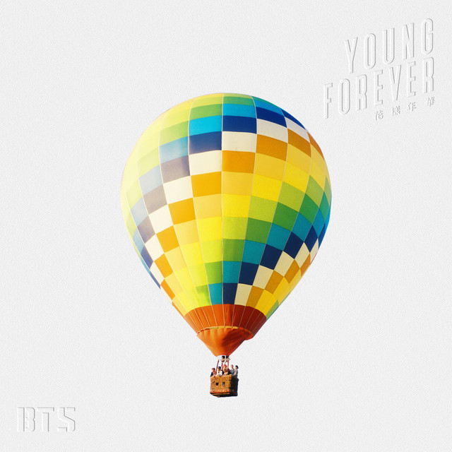
Young Forever concluiu e expandiu a narrativa iniciada em 화양연화. Os singles Epilogue: Young Forever, Fire e Save Me reforçaram os temas de juventude, amadurecimento, amizade e o desejo de eternizar os momentos mais belos da vida, consolidando a identidade emocional e narrativa dessa era.
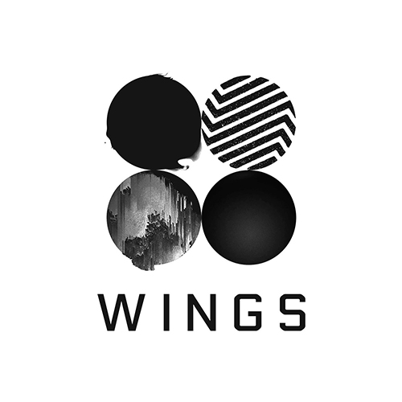
Inspirado em "Demian" de Hermann Hesse. Cada membro ganhou um short film solo antes do lançamento — exploração da tentação, crescimento e a dualidade do bem e do mal. Breakthrough artístico total.
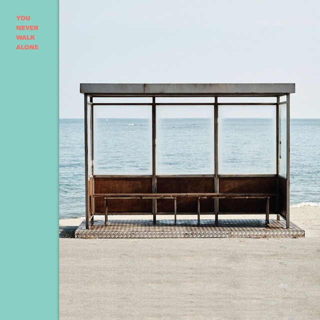
You Never Walk Alone ampliou a mensagem de WINGS, trazendo uma abordagem mais acolhedora e esperançosa. Os singles Spring Day e Not Today reforçaram os temas de superação, amizade, saudade e resistência, transmitindo a ideia de que ninguém precisa enfrentar as dificuldades sozinho.
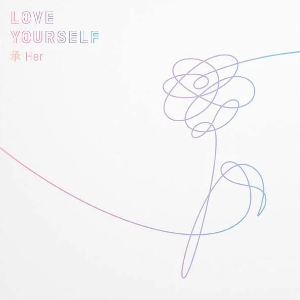
Início da trilogia Love Yourself. DNA foi o primeiro MV do grupo a estrear no Top 10 do Billboard Hot 100. A era trouxe leveza, cores e um BTS em total ascensão global.

Primeiro álbum a estrear em #1 no Billboard 200. Fake Love capturou a dor do amor que te faz perder a si mesmo. Uma das eras mais aplaudidas artisticamente.
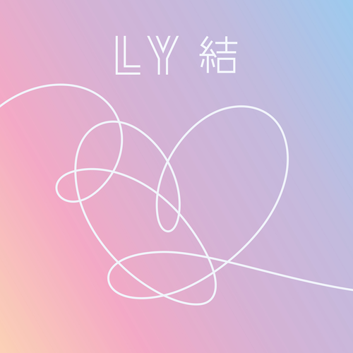
O fechamento da trilogia — a resposta é amar a si mesmo. IDOL celebrou a identidade coreana com referências a hanji, talchum e ritmos tradicionais. Discurso histórico na ONU com RM.

Inspirado na psicologia de Carl Jung. A persona é a máscara que mostramos ao mundo — Boy With Luv com Halsey foi uma explosão de alegria que dominou charts globais.
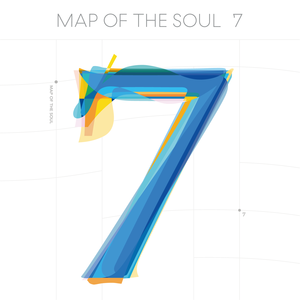
7 anos, 7 membros, 7 sombras. ON e Black Swan exploraram as sombras junguianas — o lado escuro que cada um carrega. Considerado por muitos o pico criativo do grupo.
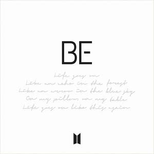
Criado inteiramente pelos membros durante a pandemia. Dynamite, o primeiro single 100% em inglês, foi lançado antes. BE é sobre consolo, presença e sobreviver ao isolamento juntos.

Era pop/funk de verão que dominou o Billboard Hot 100 por semanas. Permission to Dance foi uma mensagem de esperança pós-pandemia — simples, radiante e universal.
A antologia dos 9 anos — prova de tudo que construíram. Yet to Come declarou que o melhor ainda está por vir, antes do hiato para o serviço militar dos membros mais velhos.
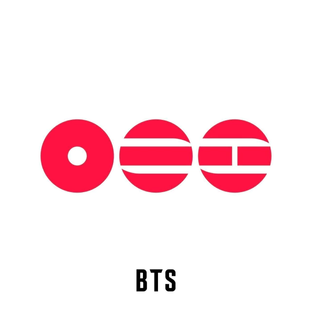
O retorno aguardado. Após o cumprimento do serviço militar pelos membros, o BTS reuniu o grupo completo com Arirang — um album em homenagem à canção folclórica coreana mais conhecida do mundo, ressignificada para uma nova era de maturidade e gratidão.
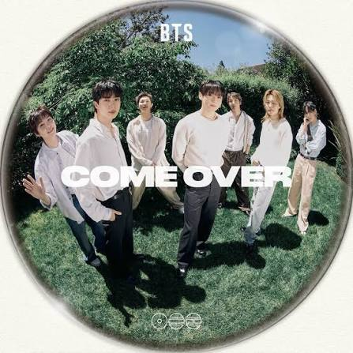
Um presente para o Army no aniversário de 13 anos do BTS, a música Come Over, uma faixa secreta do vinil do álbum Arirang, vem para as plataformas digitais no dia 13/06.